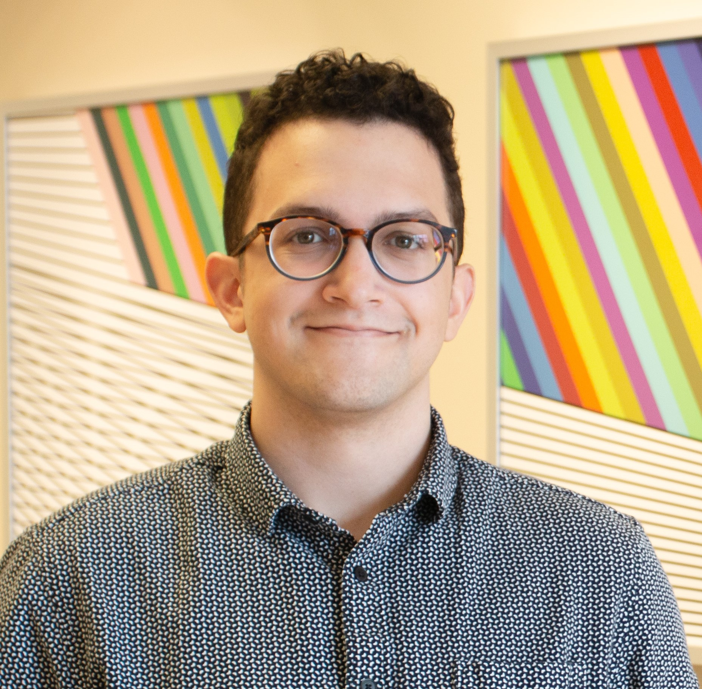

Blake HolmanI'm Blake, a first-year PhD student in computer science at Purdue University! I am broadly interested in cryptography and quantum computation. Currently, I'm researching the classical and post-quantum security of memory-hard functions with my advisor Jeremiah Blocki. This summer I'll be joining the Fundamental Algorithmic Research for Quantum Computing (FAR-QC) team at Sandia National Laboratories. I'm grateful to be supported by the Ross Fellowship at Purdue for the 2021-2022 academic year and the Ford Foundation Predoctoral Fellowship starting Fall 2022.Prior to joining Purdue, I studied computer science and mathematics at the University of Texas at Austin as a Ronald E. McNair Scholar. At UT I worked with Greg Plaxton on three-dimensional stable marriage and conducted research as a part of the Building-Wide Intelligence Project with Justin Hart. |
 |
Research |
|
|
{{post.title}}{{post.authors}} {{post.venue}}, {{ post.date | date: "%Y" }} {% if post.paper %} paper {% endif %} {% if post.video %} video / {% endif %} {% if post.code %} code / {% endif %} {% if post.poster %} poster {% endif %} {% if post.slides %} slides / {% endif %} {% if post.tech_report %} tech report / {% endif %} {{ post.excerpt }} |
|
Design and source code from Jon Barron's website |